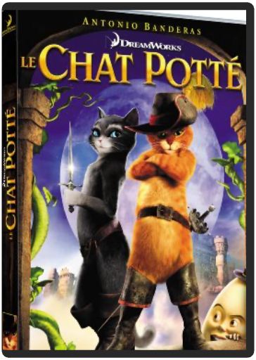
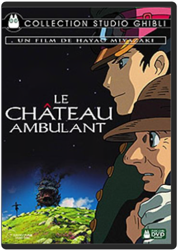
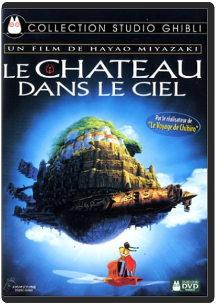

là-hautwalt disney là-hautwalt disney  Contenu et bonus : Blu-ray 2 disques  le 13ème guerrierjohn mctiernan le 13ème guerrierjohn mctiernan Crépusculaire, barbare, épique, Le Treizième Guerrier aura d'emblée pris place dans nos coeurs parmi les plus beaux films d'aventures de ces vingt dernières années, aux côtés de Conan le barbare, de Braveheart, du Dernier des Mohicans ou de Blade. Voulu, coproduit et réalisé par un John McTiernan qui s'est laissé emporter par le souffle héroïque de ses personnages, Le Treizième Guerrier est l'adaptation d'un roman de Michael Crichton, Eaters Of The Dead, inspiré des écrits d'un érudit arabe du Xe siècle, Ahmed ibn Fahdlan, et proche, dans son souci de ne pas se laisser distraire de l'essentiel, des sagas nordiques. Confrontant les cultures et les esprits, laissant peu à peu le groupe se souder contre la menace commune, McTiernan laisse parler la noblesse de leurs caractères et s'épanouir celle d'Ahmed ibn Fahdlan, joué par Antonio Banderas. L'érudit curieux mais naïf gagne ainsi au fil de leur quête sa place parmi les Vikings et plonge avec eux dans le bruit et la fureur d'une bataille que même les hommes du Nord appréhendent. Le travail documentaire de Crichton, le soin apporté à la confection artisanale des décors et des costumes, la splendeur de la photo (les scènes de nuit sont tournées à la torche !), la fluidité virtuose de la caméra de McTiernan : tout concourt à faire du Treizième Guerrier une épopée ("Une légende aux portes de l'histoire", aurait dit Hugo) vibrante et guerrière et, déjà, un classique. —Ambroise Ecorcheville le chat pottéchris miller Vous l'avez adoré dans Shrek découvrez à présent les origines du légendaire félin - et de son imposante paire de bottes - dans cette épopée animée hilarante ! Amant, combattant et hors la loi, le Chat Potté nous embarque dans le plus grand périple de ses neuf vies. Accompagné de ses acolytes Kitty Pattes de Velours et Humpty Alexandre Dumpty, il va devoir se mesurer aux célèbres et terribles Jack et Jill. Voici la véritable histoire du Chat, du Mythe, de la Légende et' des Bottes ! le château ambulanthayao miyazaki Hayao Miyazaki n’a rien à prouver à personne. Ce maître de l’animation, technicien hors pair, fluidifie à l’extrême sa mise en scène, tout en distillant sa vision du monde. Modeste et généreux, l’homme livre son conte féerique comme une main tendue. Sans perdre son temps à s’émerveiller du merveilleux, Miyazaki décrit un univers réaliste où le féerique aurait sa place naturelle pour aborder une histoire malicieuse sur la vieillesse du corps et la jeunesse du cœur. Récit merveilleux qui mêle pamphlet antimilitariste et fable pour adultes, Le Château ambulant est une expérience à vivre absolument. - www.ecranlarge.com le château dans le cielhayao miyazaki Sorti en salles après les chefs-d'œuvre Princesse Mononoké et Le Voyage de Chihiro bien qu'il ait été réalisé plus de dix ans auparavant, Le Château dans le ciel développe déjà les grands thèmes qui sous-tendent les opus suivants. Inspiré par Jonathan Swift, cette histoire d'enfants à la recherche d'une île cachée au cœur des nuages se double d'un message écologique puissant qui renvoie à la catastrophe de Hiroshima. D'un point de vue plastique, le film surprend, par le contraste du dessin des personnages, assez rétros, qui évoluent dans des décors incroyablement fouillés, comme dans les meilleurs des films de science-fiction. Notons que l'on retrouve des éléments imaginaires voisins dans quelques bandes dessinées européennes, notamment chez le Français Fred (Philémon et le château suspendu). Côté bonus, les storyboards sont passionnants et complétés par les bandes-annonces japonaises. —Hervé Comte  le fabuleux destin d'amélie poulain - édition collectorjean-pierre jeunet le fabuleux destin d'amélie poulain - édition collectorjean-pierre jeunet Amélie Poulain a une idée fixe en tête : rendre les gens heureux. De ses voisins à ses collègues et clients du petit café de Montmartre où elle est serveuse, tout le monde voit un jour sa vie bouleversée par cette jeune fille malicieuse, jusqu'au moment où elle tombe amoureuse d'un employé de sex-shop, collectionneur de photomatons abandonnés. Mais dans l'univers d'Amélie, rien n'est simple. Une image toujours aussi éblouissante, à laquelle Jean-Pierre Jeunet nous avait pourtant habitués, qui sert un récit magique et revigorant, telle est la trame d'un film surprenant, au succès planétaire, un raz de marée qui n'en finit pas de déverser bonheur et amour avec, en toile de fond, un Paris rêvé, un Montmartre idéal habité d'acteurs judicieusement employés, d'Audrey Tautou à Mathieu Kassovitz en passant par l'émouvant Jamel Debbouze ou le fidèle Dominique Pinon. Un grand DVD pour un grand film, succès surprise de l'année 2001. —David Rault  Le Geant De FerBrad Bird Le Geant De FerBrad Bird Hogarth Hughes just rescued an enormous robot that fell from the stars to Earth. Now young Hogarth has one very big friend and an even bigger problem: how do you keep a 50-foot-tall, steel-eating giant a secret? |


 Made with Delicious Library
Made with Delicious LibraryNancy, State zipflap congrotus delicious library Thomas, Julien